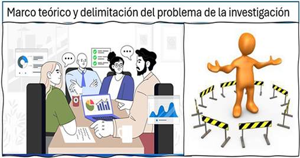
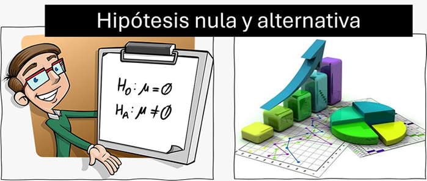
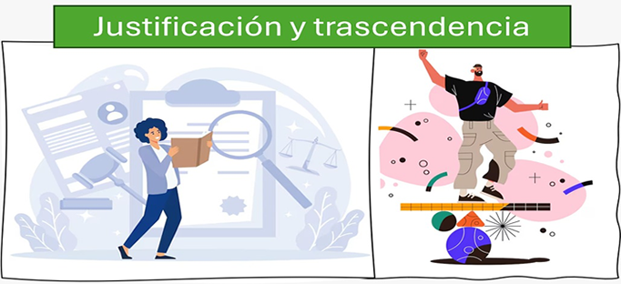

Unidad II. Estructura del protocolo de investigación
Es el esquema organizado que guía el desarrollo del estudio y asegura su rigor científico. Generalmente incluye el título, planteamiento del problema, justificación, objetivos,
hipótesis o preguntas de investigación, marco teórico, diseño, muestra, recolección de datos, estadística, éticas, cronograma, recursos y referencias. Esta estructura permite presentar de forma clara y sistemática qué se investigará, por qué es importante y cómo se llevará a cabo,
garantizando coherencia, viabilidad y validez (Hernández Sampieri, Fernández Collado & Baptista Lucio, 2014).
La estructura del protocolo de investigación se caracteriza por su organización lógica y sistemática, que permite presentar de manera clara el problema a estudiar, los objetivos que se persiguen y la fundamentación teórica que sustenta el estudio.
Todo lo que se establece debe ser preciso, coherente y objetivo, teniendo como propósito de la investigación la importancia científica y social.
2.1.1
Marco teórico
Es la base conceptual que orienta la investigación, dado que compila, examina y estructura las teorías, conceptos y estudios que vinculan la problemática en cuestión. Su función principal es ofrecer una base científica que posibilite entender el fenómeno investigado,
dar razones de la importancia del estudio y guiar en la elaboración de hipótesis o interrogantes de investigación.
Se distingue entre sus rasgos esenciales que debe ser pertinente, al contener datos directamente vinculados con el problema; actualizado, al incluir fuentes confiables y actuales.
Características
Sustento científico
Proceso sistemático
Información organizada y fuentes fidedignas
Mantiene coherencia lógica y organización temática clara.
Originalidad en la información
Relevancia en la investigación
Enfoque deductivo y rigor científico
2.1.2
Delimitación del problema de la investigación
Precisa el alcance del estudio estableciendo con claridad los límites espaciales, temporales, conceptuales y poblacionales del fenómeno que se analizará. Este proceso permite enfocar la investigación en un contexto específico, evitando ambigüedades y reduciendo la complejidad del problema para hacerlo viable y abordable científicamente.
Al delimitar el problema se define qué se estudiará y qué quedará fuera del análisis, favoreciendo la claridad en los objetivos, métodos y resultados. Una delimitación precisa contribuye a la factibilidad del estudio, optimiza recursos y asegura que la investigación responda de manera concreta a la
pregunta planteada.
Figura 2.1Marco teórico y delimitación del problema de la investigación

Nota. Elaboración propia basada en Fundamentos de investigación. McGraw-Hill (2018). Hernández Sampieri, R.
2.1.3
Planteamiento de objetivos
Etapa en la que se establecen los propósitos que guían la investigación y orientan todas sus acciones metodológicas. Los objetivos el alcance de la investigación y deben derivarse directamente del problema planteado.
Entre sus características, se establece objetivos, precisos, medibles y coherentes con la investigación. Se redactan en infinitivo
y delimitan el rumbo del estudio. Un adecuado planteamiento de objetivos asegura la coherencia del proceso investigativo y permite evaluar
el cumplimiento de los resultados esperados (Hernández Sampieri, Fernández Collado y Baptista Lucio, 2014).
Objetivo general
Expresa y define con claridad qué se busca alcanzar al concluir la investigación. Se deriva directamente al planteamiento del problema y orienta todo el proceso investigativo, estableciendo el rumbo que seguirán los métodos, técnicas y procedimientos. Su redacción debe ser clara, precisa y estar formulada en infinitivo, reflejando el resultado global que se espera alcanzar.
Este objetivo integra el propósito central del estudio y sirve como referente para formular los objetivos específicos, evaluar los resultados y mantener la coherencia del trabajo científico.
Elementos:
Investigación.
Problema planteado.
Redacción clara y coherente.
Elaboración analítica.
Acotación del alcance del estudio.
Desarrollo metodológico y de investigación.
Formulación de los objetivos específicos.
Evaluación del estudio.
Objetivos específicos
Es la forma de establecer las acciones concretas y ordenadas que permiten alcanzarlo de manera sistemática.
Características:
Objetivo general.
Estudio en acciones concretas y ordenadas.
Identificar, analizar, describir y evaluar.
Claros, precisos y comprensibles.
Medibles y verificables.
Congruencia del problema de investigación.
Selección herramientas y método.
Evaluación.
Logro del objetivo general.
Impacto científico
Es la forma en que se relaciona con la contribución la investigación con el avance de una área específica.
Impacto social
Son los beneficios en donde la investigación presenta la forma de la muestra y solución (Hernández Sampieri et al., 2014).
Impacto económico
Es cuando los resultados contribuyen al buen rendimiento de los recursos y valor (Hernández Sampieri et al., 2014).
Impacto tecnológico
Esto impulsa el desarrollo de soluciones prácticas que facilitan actividades humanas y optimizan procesos en diferentes sectores.
Asimismo, promueve la modernización, la eficiencia y la transformación digital, favoreciendo la transferencia de conocimiento hacia la industria y la sociedad. La investigación con impacto tecnológico fortalece la innovación y contribuye al desarrollo científico-tecnológico de las naciones (Hernández Sampieri et al., 2014).
Figura 2.2Planteamiento de objetivosNota. Elaboración propia basada en Fundamentos de investigación. McGraw-Hill (2018). Hernández Sampieri, R.
2.1.4
Delimitación de variables
Consiste en identificar, definir y precisar las características o factores que serán objeto de medición y análisis dentro de una investigación. Este proceso permite establecer con claridad qué aspectos del fenómeno se estudiarán, cómo se relacionan entre sí y de qué manera podrán observarse o cuantificarse. Delimitar las variables facilita la formulación de hipótesis, orienta la recolección de datos y asegura que el estudio mantenga coherencia con el problema planteado.
Entre sus características principales, las variables deben estar claramente definidas conceptual y operacionalmente, ser medibles y pertinentes al objetivo del estudio (Hernández Sampieri, Fernández Collado & Baptista Lucio, 2014).
Tipos de variables
Todas las variables tienen propiedades o factores que pueden medirse u observarse en una investigación.
Según su función en la investigación
Variable independiente y dependiente
Variables intervinientes y control
Según su naturaleza
Variables cualitativas y cuantitativas
Discretas
Según su nivel de medición
Nominales
Ordinales
Intervalo
Razón
Figura 2.3Delimitación de variablesNota. Elaboración propia basada en Fundamentos de investigación. McGraw-Hill (2018). Hernández Sampieri, R.
2.1.5
Hipótesis nula y alterna
Son proposiciones utilizadas en la investigación cuantitativa para someter a prueba una afirmación mediante métodos estadísticos.
Características de la hipótesis nula (H₀)
Representa la suposición inicial que se somete a prueba estadística.
Se formula de manera clara, objetiva y medible.
Es susceptible de ser rechazada mediante evidencia empírica.
Análisis estadístico.
Se expresa en términos de igualdad o ausencia de efecto.
Debe ser coherente con el problema, objetivos y variables del estudio.
Permite tomar decisiones objetivas basadas en los resultados obtenidos.
Por su parte, la hipótesis alterna plantea que sí existe una relación, diferencia o efecto significativo entre las variables. Representa la afirmación que el investigador espera demostrar y se acepta cuando los
datos permiten rechazar la hipótesis nula. Ambas hipótesis son mutuamente excluyentes y científicas ya que permiten interpretar resultados con rigor y objetividad (Hernández Sampieri, Fernández Collado y Baptista Lucio, (2014)).
Elementos de la hipótesis alterna (H₁ o Ha)
Plantea que sí existe relación, diferencia o efecto significativo entre las variables.
Representa la afirmación que el investigador busca demostrar.
Se formula de manera clara, precisa y medible.
Es aceptada cuando la evidencia permite rechazar la hipótesis nula.
Expresa una posible explicación o resultado esperado del estudio.
Debe ser coherente con el problema, objetivos y variables.
Puede plantearse en forma direccional (indica el sentido del efecto) o no direccional.
Sentido a los datos obtenidos en la investigación científicas.
Figura 2.4Hipótesis nula y alterna

Nota. Elaboración propia basada en Fundamentos de investigación. McGraw-Hill (2018). Hernández Sampieri, R.
2.1.6
Justificación
Planteamiento a preguntas "por qué" y "para que" de la investigación científica, que permita establecer la importancia, relevancia, beneficios que se van a obtener de la misma, así como los conocimientos prácticos, teóricos y sociales que pueden emanar de ella.
Las características elementales que debe de establecerse es que tenga una relevancia social, obtención de conocimientos teóricos-prácticos en beneficio de un problema a resolver, de la misma manera se debe de llevar
a cabo la aplicación de una metodología para su desarrollo, para que con ello se establezca la viabilidad de la misma.
2.1.7
Trascendencia
Una investigación trascendente no solo responde a una necesidad actual, sino que también aporta bases para futuros estudios y avances en el área del conocimiento.
Entre sus características, la trascendencia destaca por su proyección a largo plazo, su aporte significativo al conocimiento y su potencial para generar cambios positivos en
la comunidad o disciplina. Asimismo, se relaciona con la pertinencia social, la aplicabilidad de los resultados y la posibilidad de transferir los hallazgos a otros contextos.
Figura 2.5Justificación y trascendencia

Nota. Elaboración propia basada en Fundamentos de investigación. McGraw-Hill (2018). Hernández Sampieri, R.